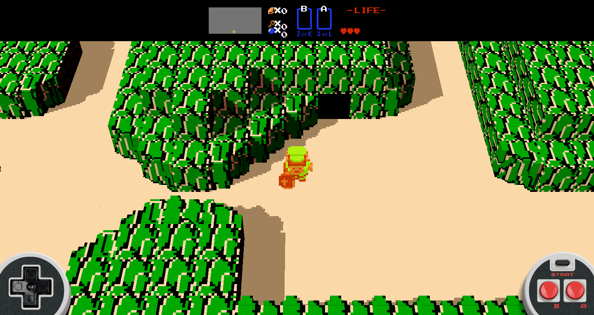
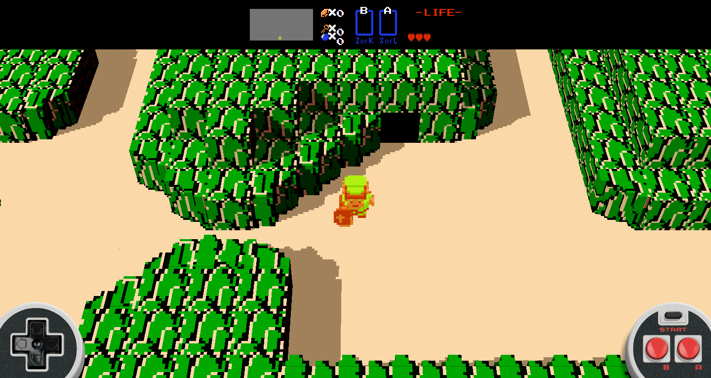

This slide show uses the only code on this site not written by me; the file's contents were written on
this Khan Academy JavaScript demonstration. The CSS is also externally stored, though its contents, including the return button CSS animation, were all written by me.
 
